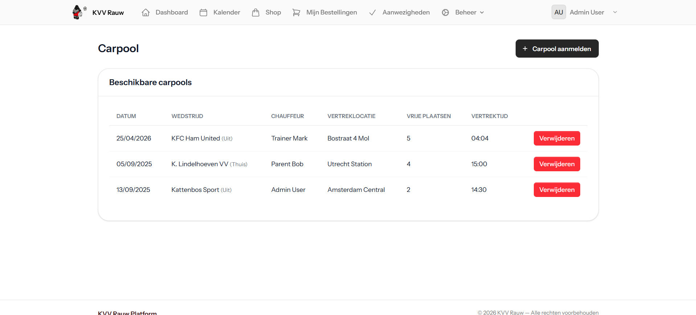
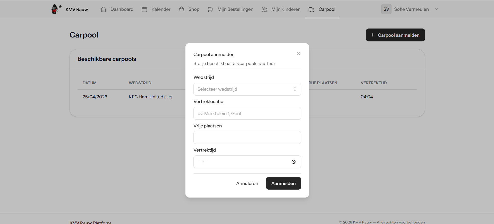

Portfolio
Mijn Projecten
SKIL2 opdrachten & persoonlijke realisaties
Verplicht — SKIL2
SKIL2 Projecten
Semester 2 — SKIL2
Webapplicatie — KVV Rauw
Context
Dit teamproject binnen SKIL2 draaide rond het bouwen van een volledige webapplicatie voor voetbalclub KVV Rauw. De analyse werd door een andere groep uitgewerkt; ons team vertaalde de vereisten naar een werkende applicatie met focus op gebruiksgemak en beheer.
Wat ik bouwde
Ik werkte mee aan de volledige agendapagina, openstaande betalingen voor ouders, agenda- en wedstrijdseeders, afwezigheidsregistratie, afbeeldingsslots in agenda-items en de carpoolfunctionaliteit voor inschrijven en beheren.
Technologieën gebruikt
- HTML, CSS en JavaScript
- Database seeders
- Teamwerk binnen een bestaande analyse
- Beheer- en inhoudsschermen voor een sportclub
Mijn bijdrage
Ik nam de uitwerking van meerdere kernonderdelen op mij: de agenda, de carpoolstroom, de betalingsoverzichten en de visuele afwerking van de beheerpagina's. Daarnaast stemde ik de logica af met teamleden zodat de onderdelen consistent werkten.
Wat ik leerde
- Complexere functionaliteit opdelen in beheersbare taken
- Werken binnen een team met gedeelde code en vereisten
- UI-keuzes afstemmen op echte gebruikers en beheerrollen
Visuals



screenshot 4'" />
screenshot 5'" />Semester 1 — SKIL2
Analyse & Design — Poutrel
Context
Voor Poutrel, een yoga- en pilatesstudio met personal trainers, werkten we aan een volledige analyse en een functioneel prototype. De opdracht focuste op het vertalen van workshops en vereisten naar een overzichtelijke digitale oplossing.
Wat ik bouwde
Samen met het team werkte ik aan het vastleggen van de requirements, het uitwerken van user flows en het bouwen van een Figma-prototype voor belangrijke beheersituaties.
Technologieën gebruikt
- Figma
- Use cases en requirementsanalyse
- Analyse- en designrapport
- Prototype voor gebruikers- en fotoalbumbeheer
Mijn bijdrage
Ik werkte mee aan het prototype voor het beheren van gebruikers, fotoalbums en trainingsschema's. Daarnaast hielp ik mee met het structureren van de analyse zodat de deliverables logisch op elkaar aansloten.
Wat ik leerde
- Requirements omzetten naar concrete schermen en flows
- Betere afstemming met een klant via workshops en feedback
- Meer oog voor documentatie en functionele volledigheid
Visuals